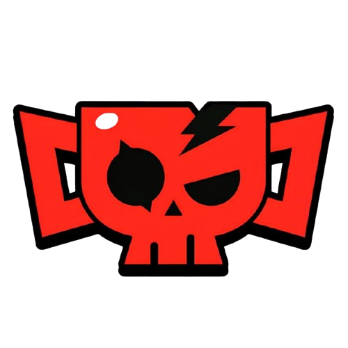

Info Brawl
Info Brawl
Os maiores mitos do Brawl Stars!
Vamos testar alguns mitos do Brawl e te mostrar se é verdade ou mentira!
Ziggy se liberta do casulo sozinho:
A lenda dizia que o Ziggy poderia sair do casulo por conta própria, como se tivesse uma habilidade secreta. Mas os testes mostraram que isso não acontece: ele só se liberta quando o jogador controla, sendo apenas boato da comunidade. 💀
Trunk elimina El Primo com um Super:
Havia quem acreditasse que o Super do Trunk era tão forte que poderia derrotar o El Primo de uma vez só. Porém, ao ser testado, ficou claro que isso não passa de mito — o Super tira bastante vida, mas não é capaz de finalizar sozinho. 💀
Alli fica enfurecida perto de brawlers invisíveis:
Outro mito curioso dizia que a Alli poderia “sentir” brawlers invisíveis e ficava enfurecida ao se aproximar deles. O vídeo mostrou que não existe esse efeito escondido: a invisibilidade continua funcionando normalmente contra ela. 💀
Luvas da Eve no escudo do Buster:
A lenda era que as luvas desapareceriam ao serem usadas no escudo do Buster. Mas foi comprovado que elas param no escudo e ainda um projétil pode retornar, causando dano aos inimigos. 💀
Fogos da Ember em poças de óleo de outra Ember:
Inicialmente, parecia que uma Ember poderia acender a poça de óleo deixada por outra. Mas foi testado e desmentido: apenas a poça de óleo da própria Ember pode ser acesa. 💀
Estatísticas de Spike em cofres:
Um mito bastante discutido era se o Spike causava um dano diferenciado em cofres, maior do que o normal. A análise mostrou que o dano segue o mesmo padrão de outros ataques, sem efeito especial em cofres. 💀
Acessório da Mina contra lançadores:
Foi levantada a hipótese de que o acessório da Mina poderia proteger contra ataques de lançadores, como Barley ou Dynamike. Testes mostraram que o acessório não bloqueia esse tipo de dano, confirmando que era apenas mito. 💀